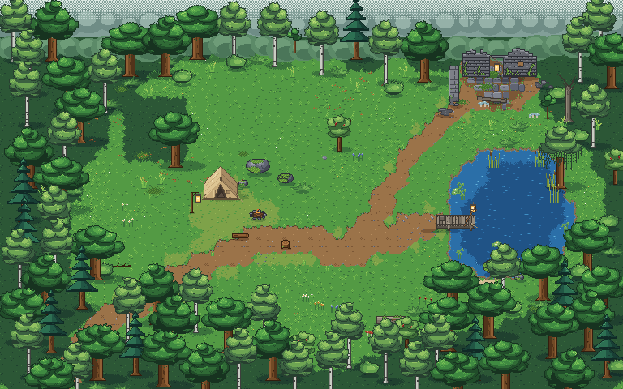

MOSSlight
An original 2D cozy survival game in a world nature has taken back. This is the visual foundation: one forest clearing, a terrain library, a 24-hour clock, seasons, weather and a first playable camper.
- Explore the clearing — WASD / arrows move, E interacts; touch controls on phones.
- Living world lab — time of day, seasons, weather, events.
- Still renders — day, night, autumn, winter, terrain test.
